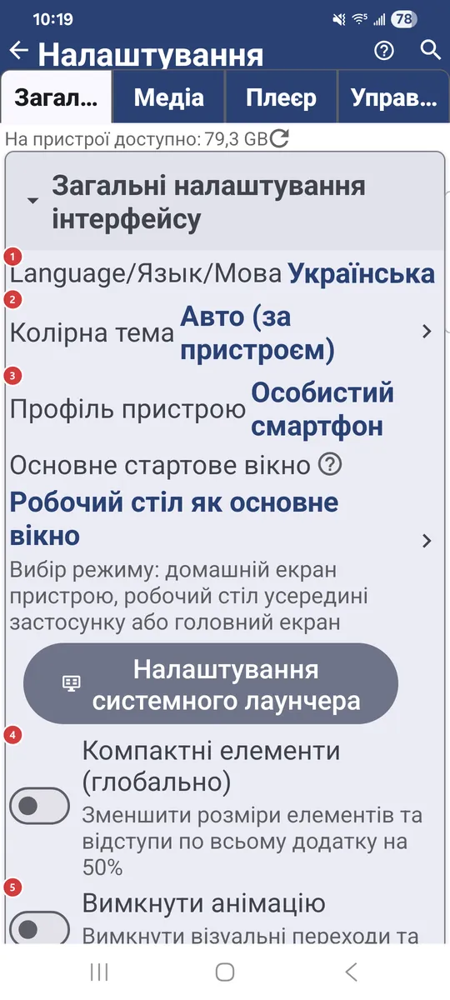
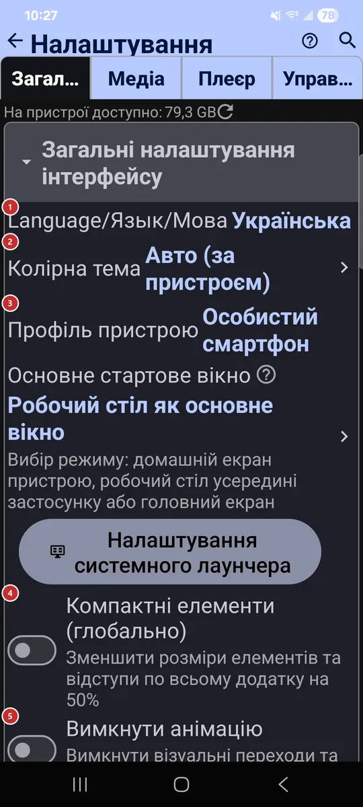

Налаштування: Загальні
Для чого цей екран
На вкладці «Загальні» зібрано налаштування, що діють на весь застосунок: мова й тема, браузер файлів, мережеві джерела, резервні копії та кеш. Заходьте сюди, коли щось має виглядати, працювати чи підключатися інакше скрізь.


Порядок дій
Єдиного порядку тут немає - кожен параметр працює сам по собі. Нижче їх згруповано за тими самими заголовками розділів, що й на вкладці.
Елементи
Загальні налаштування інтерфейсу
1Language/Язык/МоваЗадає мову всього застосунку.
Оберіть мову зі списку, і екрани перемкнуться на неї. Той самий вибір є на першій сторінці майстра привітання.
2Колірна темаОбирає світлу, темну або кольорову тему.
«Авто» стежить за пристроєм. Інші варіанти: світла, темна та зелений, синій або червоний відтінок кожної.
3Профіль пристроюЗастосовує готовий набір налаштувань під тип вашого пристрою.
Профілі є для особистого смартфона, планшета, ТВ-приставки, автомагнітоли, фоторамки, електронної книги та не тільки. Один вибір налаштовує одразу багато параметрів, і застосунок пасує пристрою без ручної метушні. «Інший / Без змін» залишає ваші налаштування як є.
- Скасування
- Перш ніж профіль перезапише налаштування, застосунок покаже, скільки параметрів зміниться. «Скасувати» залишить усе як є.
4Компактні елементи (глобально)Зменшує все, щоб на екрані вміщалося більше.
Списки, кнопки й текст зменшуються вдвічі. Зони натискання теж стають меншими, тож спершу спробуйте на великому екрані.
5Вимкнути анімаціюВимикає переходи та декоративні анімації.
Стане в пригоді, якщо анімації відволікають або пристрій працює повільно.
6Режим енергозбереженняЗаспокоює застосунок, коли заряд на межі.
Зупиняється безперервна анімація, а застосунок перестає утримувати екран ввімкненим. Оберіть, коли це починається: ніколи, завжди або нижче вибраного рівня заряду.
7Увімкнути обранеВмикає або вимикає «Обране».
Коли його ввімкнено, файли можна позначати обраними, бачити їх одним списком і виводити на віджет робочого стола. Кнопка «Обране» у списку ресурсів з’являється разом з ним.
8Дозволити нові вікнаДодає дію «Відкрити в новому вікні».
Дія з’являється в браузері файлів і в плеєрі. Вона зручна на планшетах, складних пристроях, Chromebook та великих екранах із кількома вікнами. Коли її вимкнено, усе відкривається в поточному вікні.
Інтерфейс списку ресурсів
9Розмір комірок сітки ресурсівЗадає розмір плиток ресурсів у вигляді сітки.
Стосується списку ресурсів у списку ресурсів. Дрібні комірки вміщують більше ресурсів, більші - зручніше читати. Саму сітку вмикає кнопка вигляду у списку ресурсів.
10Панель програмПоказує меню програм смугою над списком ресурсів.
Смуга дублює програми з меню, і вони опиняються під рукою в один дотик. Поки панель увімкнено, кнопка з трьома крапками прихована.
Інтерфейс браузера файлів
11Дозволити режим «Усі файли»Дозволяє режим «Усі файли» для ресурсів.
У цьому режимі ресурс показує й дає змінювати файли будь-яких типів, а не лише медіа: документи, архіви та інше. Перемикач лише дозволяє режим, а вмикати його потрібно окремо для кожного ресурсу.
13Показувати підпапки окремоПоказує підпапки окремими елементами списку.
Підпапки з’являються в списку файлів поруч із файлами. Натисніть підпапку, щоб зайти в неї.
14Дія жесту ліворучОбирає, що робить жест по рядку файлу ліворуч.
Можна призначити, наприклад, відкриття в плеєрі, «Надіслати», відомості, обране, копіювання, переміщення, перейменування, розпакування архіву, видалення або нічого. Дії, що змінюють файли, працюють лише в папках, куди можна записувати.
15Дія жесту праворучОбирає, що робить жест по рядку файлу праворуч.
Можна призначити, наприклад, відкриття в плеєрі, «Надіслати», відомості, обране, копіювання, переміщення, перейменування, розпакування архіву, видалення або нічого. Дії, що змінюють файли, працюють лише в папках, куди можна записувати.
Віддалені ресурси (SMB/(S)FTP/Хмара)
16Локальна мережа (Ethernet) SMBВмикає підключення до спільних папок у локальній мережі.
Підійде для домашнього NAS, комп’ютера з Windows і ввімкненим спільним доступом або роутера з USB-диском. Коли перемикач увімкнено, можна додавати SMB-ресурси, а у списку ресурсів з’являється вкладка SMB.
17Комп'ютер в інтернеті (S)FTPВмикає підключення до серверів через FTP і SFTP.
Підійде для домашнього сервера, NAS, вебхостингу або роутера з підтримкою (S)FTP. Коли перемикач увімкнено, можна додавати такі ресурси, а у списку ресурсів з’являється вкладка S/FTP.
18У хмарних ресурсахВмикає хмарні сховища: Google Drive, OneDrive і Dropbox.
Підключіть акаунт, і хмарні папки відкриються просто в застосунку. Коли перемикач увімкнено, у списку ресурсів з’являється вкладка «Хмара».
Доступ з телефону
19SFTP-серверДозволяє іншим пристроям відкривати папки з цього пристрою через SFTP.
Додайте хоча б одну спільну папку, оберіть вхід за паролем або SSH-ключем і порт від 1024 до 65535, а тоді ввімкніть сервер. Інший пристрій підключиться за показаною тут адресою або за кодом сполучення у FastMediaSorter. Змінивши налаштування, вимкніть і знову ввімкніть сервер, щоб вони набули чинності.
Доступ звідусіль
20Доступ через Google DriveДозволяє іншим вашим пристроям із тим самим акаунтом Google підключатися до спільних папок цього телефона.
Адреса сервера, логін і пароль потрапляють у папку застосунку на вашому Google Drive. Коли перемикач вимкнено, ці пристрої бачать спільний доступ, але підключитися до нього не можуть.
21Сервер обмінуРобить спільні папки цього телефона доступними з будь-якої мережі через ваш обмінний сервер.
Увімкніть перемикач, щоб публікувати через вихідний обмінний сервер: перший доданий сервер стає вихідним сам, а кнопка «Змінити» лише вибирає інший; рядок стану покаже адресу, за якою доступні папки. «Нове посилання доступу» видає свіже посилання на спільний доступ.
Авторизація й акаунти
22Збережені авторизаціїПоказує входи, які застосунок зберіг на екрані вебвходу.
Екран вебвходу в застосунку зберігає cookie та логіни, щоб застосунок міг завантажувати файли із сайтів, де потрібен вхід. Відкрийте цей екран і видаліть те, що вже не потрібне.
23Захищати секретні екраниХоває важливі екрани від скриншотів і прев’ю в списку нещодавніх.
Стосується екранів, на яких видно паролі: їх не можна зняти на скриншот, і вони не показуються в прев’ю списку нещодавніх застосунків.
Резервні копії, відновлення й експорт
24Вивантажити всі налаштування у файлЗберігає всі налаштування у файл.
Файл FastMediaSorter_export.xml лежить у папці Downloads. Він стане в пригоді, щоб перенести налаштування на інший пристрій або повернутися до них пізніше.
25Завантажити налаштування з файлуЗавантажує налаштування з файлу експорту.
Читає FastMediaSorter_export.xml із папки Downloads, тому спершу покладіть туди файл - наприклад, вивантажений на іншому пристрої.
- Скасування
- Якщо ви можете захотіти повернутися до поточних налаштувань, спершу експортуйте їх.
26Копіювати налаштування в Google DriveЗберігає налаштування у вашому Google Drive.
До резервної копії входять усі налаштування, список ресурсів, мережеві паролі та збережені входи на сайти, тож тримайте файл копії в таємниці. Входи в хмари (Google Drive, OneDrive, Dropbox) не зберігаються. Коли копія з’явиться, нижче буде видно її дату й акаунт.
27Відновити налаштування з Google DriveПовертає налаштування з резервної копії в Google Drive.
Стане в пригоді на новому пристрої або після скидання. Входи в хмари до копії не входять, тож потім увійдіть у Google Drive, OneDrive або Dropbox знову.
28СКИД налаштуваньПовертає всі налаштування до значень за замовчуванням.
Ресурси й призначення залишаються на місці. Перед скиданням застосунок просить підтвердити дію.
- Скасування
- Якщо ви можете захотіти повернути налаштування, спершу експортуйте їх.
Фонова синхронізація, мережа й кеш
29Паралелізм мережіЗадає, скільки мережевих операцій виконується одночасно.
Значення від 1 до 24, за замовчуванням 4. Більше операцій одразу можуть працювати швидше в швидкій мережі, менше - дбайливіше для повільного з’єднання чи слабкого сервера.
30Розмір попереднього кешу відеоЗадає, яка частина потокового відео буферизується наперед.
«Менше» (0,5×) заощаджує місце й трафік, але в повільній мережі відтворення може уривчастись. «Авто» залишає вибір плеєру. «Більше» (2×) відтворює плавніше в нестабільній мережі й займає більше місця на диску.
31Увімкнути фонову синхронізаціюПеревіряє мережеві ресурси на зміни файлів у фоні.
Оберіть, як часто перевіряти, або запустіть перевірку одразу кнопкою «Синхронізувати зараз». Рядок нижче показує, коли синхронізація була востаннє.
32Попереднє завантаження мініатюрГотує мініатюри мережевих відео та PDF після кожної синхронізації.
Мініатюри створюються у фоні, і на момент, коли ви відкриєте папку, вони вже готові. Окремий параметр обмежує це мережами без обмежень за трафіком, як-от Wi-Fi.
33Розмір кешуЗадає, скільки місця на диску може зайняти кеш зображень.
У кеші зберігаються прев’ю й мініатюри, щоб наступного разу вони відкривалися швидко. Введіть розмір у мегабайтах або натисніть «Авто» - застосунок підбере його за обсягом пам’яті пристрою. За замовчуванням це 2 ГБ.
34Очистити кешОчищає кеш застосунку, щоб звільнити місце.
Видаляються прев’ю, мініатюри й тимчасові файли, завантажені з мережі. Поруч із кнопкою показано поточний розмір кешу, а перед очищенням застосунок просить підтвердити дію. Кеш наповниться знову в міру перегляду.
- Скасування
- У кеші лежать лише копії, тож ваші файли не постраждають; перший перегляд папки може бути повільнішим.
35Збір статистикиЗбирає статистику використання на вашому пристрої.
Дані лишаються на пристрої, автоматично нічого не надсилається. Поки збирання ввімкнено, з’являється рядок «Статистика», що відкриває зібране.
Скидання розділу «Загальні»
36Скинути розділ ЗагальніПовертає до значень за замовчуванням лише цю вкладку.
Налаштування на інших вкладках зберігаються. Перед скиданням застосунок просить підтвердити дію.
Усе про цей застосунок
37Додаткові модуліКерує необов’язковими частинами застосунку, які ви завантажуєте.
Розширення - наприклад, розпізнавання тексту, переклад чи додаткові декодери - завантажуються лише коли вони потрібні й видаляються, щоб звільнити місце.
38Дозволи та доступПоказує, до чого застосунок має доступ, і дає змогу надати його.
У кожного дозволу є короткий підпис про те, навіщо він потрібен. Надайте потрібне, а для тих, що Android не дає запитати напряму, відкрийте системні налаштування.
39Про системуВідкриває екран із відомостями про пристрій і застосунок.
Там зібрано технічні дані про цей пристрій і застосунок.
40Керівництво користувачаВідкриває керівництво користувача в браузері.
Керівництво відкривається українською, російською або англійською - залежно від мови застосунку.
41Вступний екранЗнову відкриває майстер привітання.
Пройдіть сторінки першого запуску ще раз: мова, тема, профіль пристрою, мережеві джерела, можливості та дозволи.